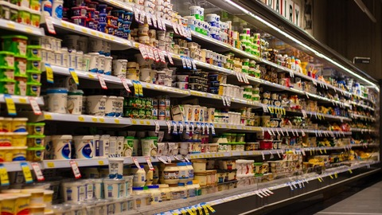
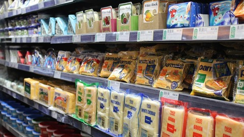

Áruházak
Üzleteinkben vásárlóink számára minőségi termékeket kínálunk elérhető áron, barátságos kiszolgálással. Fontos, hogy mindenki gyorsan és kényelmesen intézhesse a bevásárlást, akár hétköznapi, akár különleges alkalomról van szó. Üzleteink könnyen megközelíthetők autóval és tömegközlekedéssel is, mivel célunk az, hogy mindenki számára elérhetővé tegyük a vásárlás élményét!
Áruházaink
Bécsi út
Budafoki út

Kerepesi út
